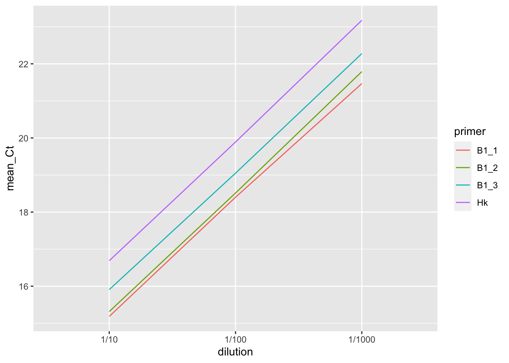

Chapter 2 Primer efficiency (1 target gene & 1 housekeeping gene)
2.1 Data simulation
We are going to dilute our sample three times by the factor of 1/10. So, for example, if we add 1\(\mu L\) sample in 9\(\mu L\) water, it will be a 1/10 dilution. We have to follow the same procedure serially to make 1/100 and 1/1000 dilutions.
Also, we shouldn’t forget to replicate the same dilution multiple times. Here, in the example, we are simulating 3 runs per dilution for 3 primer pairs against the same gene B1 to find out the best primer pairs. We are having one housekeeping gene (Hk) here. Add negative control (NTC) in the plate as an internal control as well.
set.seed(10)
nDil <- 3 #No. of dilution
geneB1_1 <- rbind(rnorm(nDil, 15.2, .03),
rnorm(nDil, 18.4, .03),
rnorm(nDil, 21.5, .03))
geneB1_2 <- rbind(rnorm(nDil, 15.3, .03),
rnorm(nDil, 18.5, .03),
rnorm(nDil, 21.8, .03))
geneB1_3 <- rbind(rnorm(nDil, 15.9, .03),
rnorm(nDil, 19.1, .03),
rnorm(nDil, 22.3, .03))
geneHk <- rbind(rnorm(nDil, 16.7, .03),
rnorm(nDil, 19.9, .03),
rnorm(nDil, 23.2, .03))
geneB1 <- data.frame(rbind(geneB1_1, geneB1_2, geneB1_3, geneHk))
colnames(geneB1) <- c(paste0("run", seq(1:3)))
geneB1$mean_Ct <- apply(geneB1, 1, mean)
geneB1$dilution <- rep(c("1/10", "1/100", "1/1000"), times= 4)
geneB1$primer <- c(rep("B1_1", times = 3), rep("B1_2", times = 3), rep("B1_3", times = 3), rep("Hk", times = 3))Data simulation is done (you will get this kind of data from RT-qPCR machine automaatically). Let’s make sense from the data: the line plot for each primer pairs:
2.2 Data analysis
library(tidyverse)
library(dplyr)
geneB1 %>% ggplot(aes(x=dilution, y = mean_Ct, group=primer, color=primer)) +
geom_line()
Now, we need to know the slope for each primer. %>% function from dplyr package and lm() function will help us to find the slopes for every primer. coefficients[2] part of the code will give us the slopes which we will add to our dataset as a column.
geneB1 <- geneB1 %>% group_by(primer) %>%
mutate(slope = round(lm(mean_Ct ~ dilution)$coefficients[2], 3))Now, let’s calculate the primer efficiency for each primer pairs.
geneB1$efficiency <- round((10^(1/geneB1$slope) - 1)*100, 2)
efficiencies <- unique(geneB1$efficiency)We have primer efficiency in percentage now. it should be in the range of 90-110%. Here, in this case all the three primers against geneB1 have good efficiency and all are very close to the efficiency of the primer for housekeeping gene (Hk). So, we can choose any. For your study, if you are going to design multiple primers for the same gene/transcript, you can check their efficiency and choose the best one in combination with the primer for housekeeping gene.
*We are going to choose geneB1_2 primer pair for our analysis which is closest to the primer efficiency for the housekeeping gene.
Sometimes, your primer efficiency could be outside of the range of 90-110%. In that case you have to change concentration of forward and/or reverse primer keeping all other parameters constant.
If your Ct values are too high, use less diluted sample. e.g. 1/2, 1/4, 1/8, ….., etc.
You can put your sample directly without any dilution as well. If the Ct value for undiluted sample is bigger than the diluted one (it should be smaller because there is more starting/initial DNA sample), it will mean that there is something in the undiluted sample that is inhibiting the PCR amplification.
What if your primer efficiencies for target and housekeeping gene are different and you can not change it? In this case, use pfaffl method for expression ratio calculation which can correct for the primer efficiency difference.
To reduce primer dimer formation, you may have to–
- Adjust the annealing temperature, \(T_m\) (usually increasing \(T_m\) prevents primer-dimer formation)
- Reduce primer concentrations
- Adjust the forward and reverse primer ratios
- Redesign the primers if nothing works